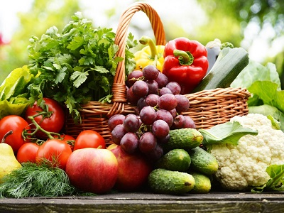
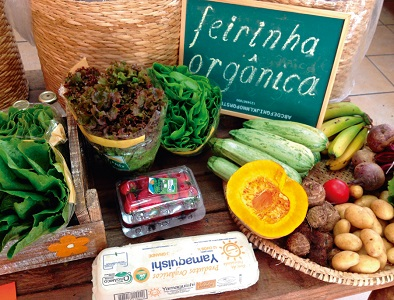

O que são Produtos Orgânicos?

É considerado “aquele obtido dentro de um sistema orgânico de produção agropecuária – ou extrativista sustentável – que beneficie o ecossistema local, proteja os recursos naturais, respeite as características socioeconômicas e culturais da comunidade local, preserve os direitos dos trabalhadores envolvidos e não utilize organismos geneticamente modificados nem químicos sintéticos” (BRASIL, 2003). A sociedade nestes últimos anos, tem despendido maior interesse no consumo de alimentos orgânicos, principalmente pela busca de uma melhor qualidade de vida por meio do consumo de alimentos considerados mais saudáveis. Essa busca por alimentos provenientes de sistemas de produção mais saudáveis, tem-se tornado uma tendência mundial que vem se fortalecendo todos os anos (ALFÖLDI, et al. 2012).
No Brasil, o mercado de produtos orgânicos vem apresentando uma tendência de alta bastante significativa nos últimos anos, de acordo com os dados da pesquisa Organis em 2021 (ORGANIS, 2021). Isso pode ser também corroborado no Cadastro nacional de Produtores Orgânicos (CNPO), dos últimos 12 anos, onde o número de produtores orgânicos cresceu em 450%, em fevereiro de 2022 e mais de 26 mil produtores estavam inscritos e regularizados (AGÊNCIA BRASIL, 2022).
De acordo com uma pesquisa realizada por Almeida (2022), mais de 30% dos brasileiros consomem produtos orgânicos, conforme comparativo, em 2017 tínhamos o percentual de 15%, já em 2019 de 19% e em 2021 de 31%, do ano de 2017 a 2021 houve um aumento de cerca de 106%. Neste cenário de aumento de demanda de produtos orgânicos, os produtores rurais vêm ganhando destaque, pois valorizam a atividade de produção ecologicamente sustentável e economicamente viável dos recursos naturais disponíveis, atendendo a crescente preocupação da população com uma alimentação mais saudável e menos agressiva ao meio ambiente.
Como começou a história dos orgânicos?
A agricultura ancestral, aquela que se pratica desde os primórdios da humanidade, adotou certas práticas, como o uso de produtos químicos e tornou-se o que chamamos hoje de “convencional”. Quando começamos a prestar atenção nas questões ambientais, teve início uma verdadeira revolução!
As origens dos sistemas ecológicos de produção começaram, na virada dos séculos 19 e 20, três nomes se destacaram nessa história: Rudolf Steiner, que nasceu em 1861, na fronteira austro-húngara, e morreu em 1925, na Suíça. Em 1924, realizou conferências com agricultores que percebiam a queda da fertilidade dos seus solos, lançando as bases da agricultura biodinâmica. Ele criou o conceito de unidade de produção como um organismo integrado, com lavouras e criações animais interagindo na mesma propriedade. Entre seus princípios de Steiner, destacamos o uso de preparados biodinâmicos para dinamizar a capacidade de produção das plantas e a especial atenção dada à paisagem rural. Sir Albert Howard viveu na Inglaterra entre 1873 e 1947. Entre 1920 e 1930 realizou na Índia diversas pesquisas agrícolas e cunhou o termo agricultura orgânica. Percebeu na cultura camponesa a sabedoria e a capacidade de manter a fertilidade do solo e criou conceito de produção que se distanciou das práticas convencionais, especialmente com as práticas de compostagem orgânica. Mokiti Okada nasceu e viveu no Japão, de 1882 a 1955. Em 1935 lançou as bases da agricultura natural fundamentado nas leis da natureza, tomando o solo como base de toda a vida no planeta. Na agricultura natural, o princípio central para os cultivos é melhorar a qualidade do solo, sempre por meios naturais.
Orgânico não é sinônimo de integral, e nem coisa de vegetariano!
“Integral”, “Natural”, “Sem Glúten”, “Livre de Transgênicos”, “Sem Gordura Trans”, “Sem Colesterol”… O mercado de alimentos processados sabe gerar apelos comerciais para atrair e segmentar consumidores. Por isso, muitos vêm os orgânicos como apenas mais um item dessa longa lista. Mas não é nada disso! Um produto pode ser orgânico e integral ao mesmo tempo. Pode ser orgânico e natural, sem colesterol e sem glúten, tudo ao mesmo tempo! Mas um alimento integral não é, automaticamente, um alimento orgânico. Para ser orgânico, ele precisa ir além. Precisa ser avaliado e aprovado oficialmente, como exige a lei brasileira! Orgânico, portanto, não é uma categoria de produtos. É um conceito bem mais amplo. Pegue um produto qualquer de sua preferência. Arroz, por exemplo! Ele pode ser integral, produzido de forma natural, não conter glúten nem gordura trans. Agora coloque nesse arroz o selo oficial de orgânico. Pronto! Ele continua sendo um produto com todas as características que você aprecia, só que agora traz um adicional importante: foi produzido com total respeito ao meio ambiente, às práticas sustentáveis, à saúde dos trabalhadores e às características socioculturais das comunidades locais.
A porta de entrada para os orgânicos está nas frutas, legumes e verduras. São estes os produtos que os consumidores mais associam com a produção orgânica. Mas a oferta de carnes bovinas e de aves orgânicas já é comum nos supermercados e nas feiras de rua. Na verdade, a diversidade de produtos orgânicos existentes vai muito além. E não estamos falando apenas dos alimentos e bebidas processados, como biscoitos, cereais, farinhas, sucos, barras de cereais etc. Há uma infinidade de produtos que muitos nem desconfiam que são orgânicos. A lista contém alimentos para pets, flores, algodão, café, açúcar, vinhos, cachaça… Todos produzidos dentro das boas práticas orgânicas. Eles recebem certificação porque trazem benefícios ambientais e sociais e agregam valor para toda a coletividade. Qualquer um que se preocupe com a segurança alimentar, com a qualidade nutricional e com a sustentabilidade, encontra nos orgânicos uma ótima opção de consumo.
Todo produto sem agrotóxico é orgânico?

Nem todo alimento que não tem o uso de agrotóxico, é considera orgânico, para isso é necessário que os produtos possuem uma certificação, e também precisam ter um selo, que é reconhecido pelo Ministério de Agricultura - MAPA, o qual atesta o cumprimento das normas de produção. Atualmente, existem seis certificadoras em atuação no país, são elas: Ecocert, IBD, Tecpar, AAO, CMO Cert Mokiti Okada e OIA, além da certificação participativa feita pelos próprios produtores, também exxiste uma Lei nº 10.831/2003, onde consta as definições sobre a agricultura e sua produção orgânica. Nos produtos, os rótulos deverão estar estampados em suas embalagens, para que o consumidor possa identificar, já nos produtos vendido a granel, será necessário pedir para ver o certificado do produtor.
Além de legumes, frutas e verduras, existem também ovos, laticínios, itens industrializados variados, maquiagem, carnes, sejam elas de boi, porco, frango, entre outros produtos de beleza, de limpeza, além de bebidas alcólicas ou não. Há ainda o café, açucar, arroz, feijão, massa, chá, iogurte, queijo, pão, biscoito, granola, palmito, basta apenas verificar se existe o selo na embalagem.
Assim como os vegetais, carnes e ovos também passam por auditoria e certificaação, que garantem que os animais são criados em pasto sem aplicação de agrotóxicos e fertilizantes, até o tratamento veterinário dos animais orgânicos também é diferenciado, as vacinações oficiais são obrigatórias, mas os cuidados não incluem antibióticos nem hormônios e são feitos com fitoterápicos ou homeopatia.
Os benefícios dos orgânicos:
Ao consumir alimentos orgânicos, você contribui com: A sua saúde e a da sua família, pois evita o risco de contaminação por possíveis resíduos agrotóxicos presentes nos alimentos frescos. A preservação do meio ambiente, uma vez que o solo e a água não são contaminados. Além disso, a produção agroecológica baseia-se no uso responsável dos recursos naturais, contribuindo para o desenvolvimento sustentável, assim como para a conservação e valorização da biodiversidade e da cultura local. A redução dos riscos à saúde dos trabalhadores rurais, que na produção convencional ficam expostos a substâncias tóxicas. A valorização do pequeno agricultor, que tem mais autonomia sobre a produção.
Orgânicos duram mais?
Depende. Por um lado, os alimentos livres de agrotóxicos têm menos água na composição (porque não levam fertilizantes que fazem a planta absorver muita água). Isso os deixa menos suscetíveis à deterioração, fazendo-os menos perecíveis. E, além disso, os convencionais recebem alta carga de produtos químicos que têm a função de acelerar o amadurecimento e esse processo continua acontecendo mesmo após a colheita, fazendo-os estragar mais rápido – então costumam receber conservantes químicos. Sabe aquele spray usado para irrigar as folhas no supermercado? Quase sempre tem água e conservante
Como cultivar produtos orgânicos:
Para cultivar produtos orgânicos, o produtor terá que fazer inicialmente um plano de manejo orgânico, ou seja, fará um planejamento de ações, o que irá auxiliar no manejo e como seguir o caminho para a sustentabilidade. Deverá seguir princípios e normas orgânicas, o qual ressulta em alimentos seguros e saudáveis, e também na preservação do meio ambiente e nas condições de trabalho do homem no campo.
Ao iniciar um projeto de produção orgânica alguns fatores devem ser observados e levados em consideração:
- Em relação à propriedade (quantidade e qualidade da água, respeitar as leis ambientais, barreiras vegetais);
- Seleção sobre as atividades a serem desenvolvidas, assistência técnica, escolha do tipo de certificação e a certificadora;
- Seguir práticas recomendadas para a produção orgânica, como o preparo da área;
- Escolha das sementes ou mudas;
- Executar práticas que auxiliam na manutenção da fertilidade do solo, como manter a cobertura permanente do solo;
- Escolha do tipo de adubação;
- Prevenção e controle de pragas e doenças;
- Controlar o crescimento do mato;
- Verificar os insumos admitidos para uso na propriedade orgânica;
- Fazer o processo de certificação orgânica individual ou em grupo;
- Comercializar os produtos;
- Obter informações sobre máquinas e equipamentos, legislação e normas técnicas.
Sistema de produção orgânica:
Existe um sistema de produção orgânica! Isso mesmo! Não há nada de “solto”, “descomplicado” ou “despreocupado” quando o assunto é produto orgânico. Ele é produzido a partir de técnicas e práticas comprovadas. Não existe uma técnica isolada. São várias técnicas orgânicas de produção que trabalham juntas, em harmonia, formando um organismo. Aliás, o termo orgânico vem justamente daí: de organismo! O sistema orgânico é diferente do sistema convencional, pois prioriza a sustentabilidade e a preservação do meio ambiente. Como você já percebeu, produzir orgânicos é tarefa para profissionais, com conhecimento técnico, experiência e motivação empreendedora.
Regulamentação dos produtos orgânicos:

A legislação, que regulamenta a Lei 10.831 de 23 de dezembro de 2003 inclui a produção, o armazenamento, a rotulagem, o transporte, a certificação, a comercialização e a fiscalização dos produtos. Em 27 de dezembro de 2007 o governo brasileiro regulamentou através do Diário Oficial da União (DOU) os novos critérios para o funcionamento de todo o sistema de produção orgânica, desde a propriedade rural até o ponto de venda. As regras estão expressas no Decreto nº 6323 de 27 de dezembro de 2007. O decreto cria ainda o Sistema Brasileiro de Avaliação da Conformidade Orgânica, é composto pelo Ministério da Agricultura, órgãos de fiscalização dos estados e organismos de avaliação da conformidade orgânica, a nova regulamentação permite também a produção paralela, na mesma propriedade, de produtos orgânicos e não orgânicos, desde que haja uma separação do processo produtivo, também não poderá haver contato com materiais e substâncias cujo uso não seja autorizado para a agricultura orgânica. De acordo com as novas regras, os agricultores familiares passam a receber autorização para a venda direta ao consumidor, desde que tenham cadastro junto ao órgão fiscalizador.
Veja o que diz o Artigo 1º da Lei 10.831: Considera-se sistema orgânico de produção agropecuária todo aquele em que se adotam técnicas específicas, mediante a otimização do uso dos recursos naturais e socioeconômicos disponíveis e o respeito à integridade cultural das comunidades rurais, tendo por objetivo a sustentabilidade econômica e ecológica, a maximização dos benefícios sociais, a minimização da dependência de energia não-renovável, empregando, sempre que possível, métodos culturais, biológicos e mecânicos, em contraposição ao uso de materiais sintéticos, a eliminação do uso de organismos geneticamente modificados e radiações ionizantes, em qualquer fase do processo de produção, processamento, armazenamento, distribuição e comercialização, e a proteção do meio ambiente.
Fontes: Organis, CI.Orgânicos, IdecVeja o que estão dizendo sobre o site:
-
Mateus Silva
Eu gostei muito do site, me ajudou muito com as minhas receitas.
-
Clarisse Rumford
Agora posso fazer cárdapios mais variados e saudáveis. E melhoro a minha alimentação.
-
Maria da Conceição
Agora consigo encontrar mais informações sobre os produtos da minha região.